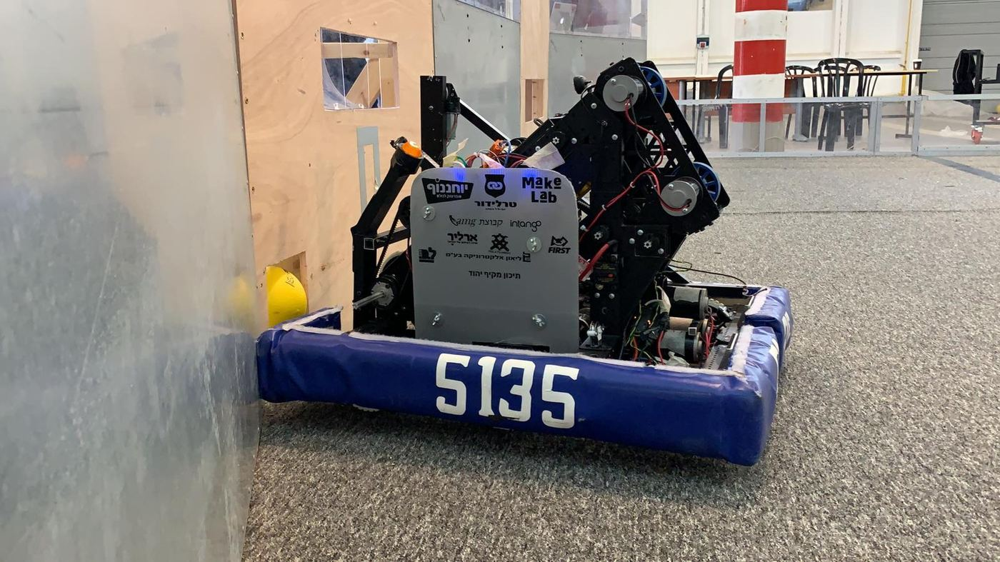
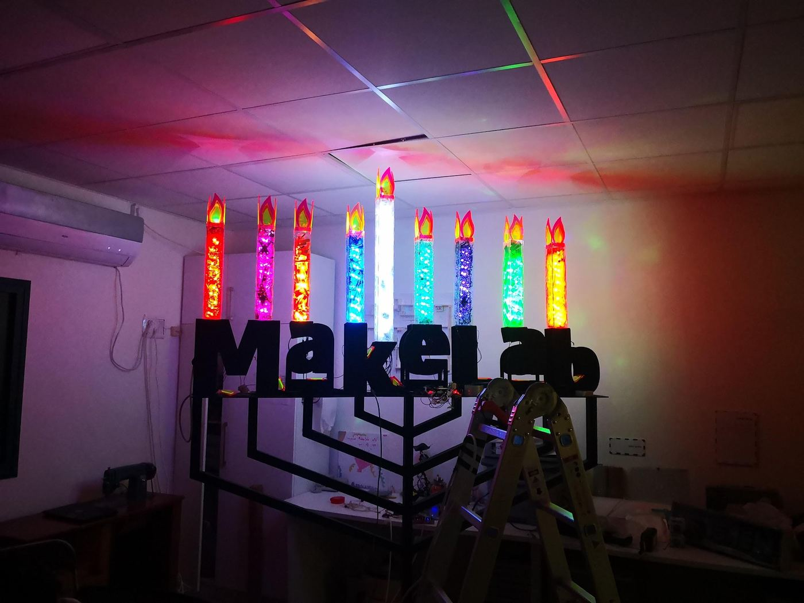
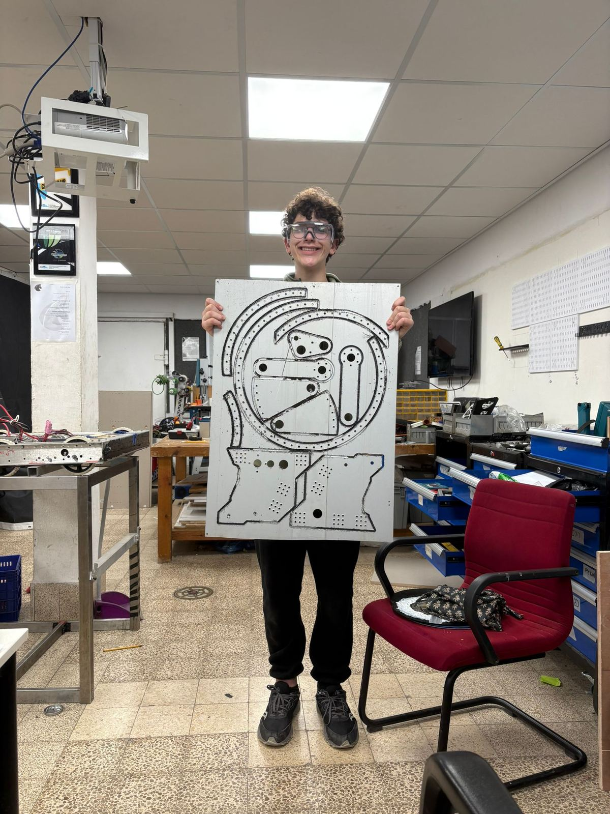
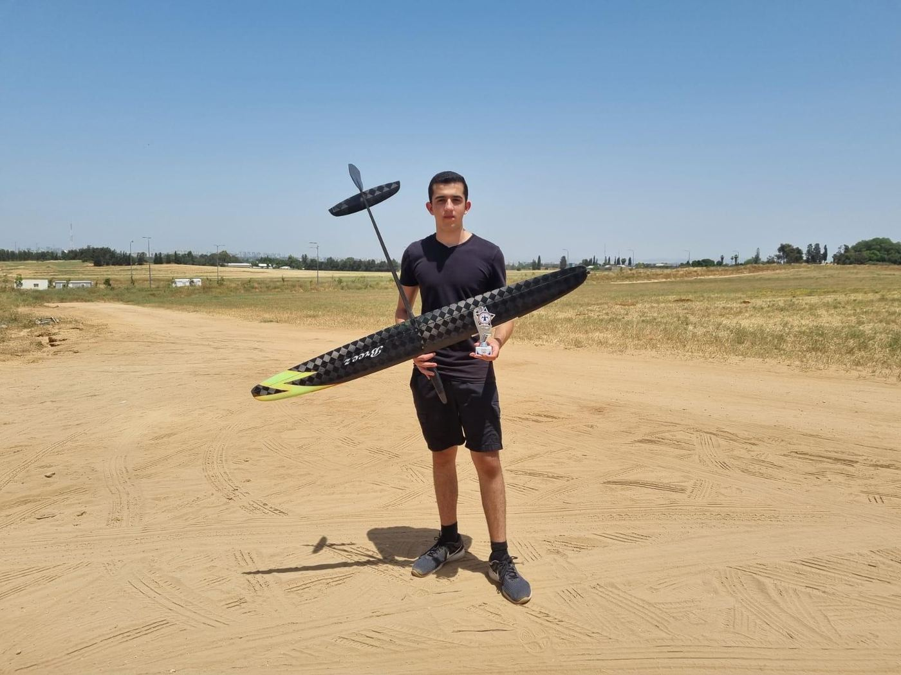
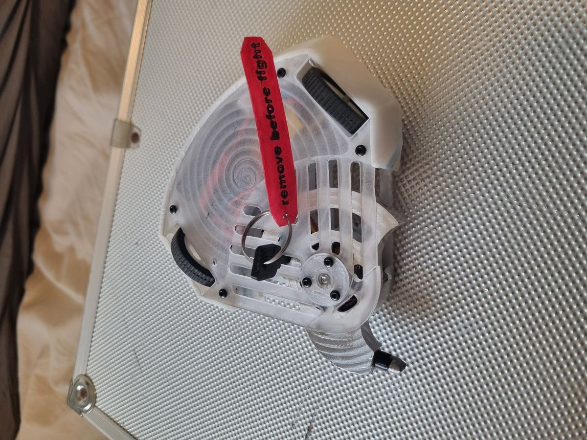

אני מייקר עם מעל עשור ניסיון בתכנון, ייצור ואינטגרציה של מערכות מכניות ורובוטיות — ובדרך לתואר בהנדסת מכונות.
יש לי ניסיון מעשי של למעלה מעשור בתחומי התכנון, הייצור והאינטגרציה של מערכות מכניות, בדגש על רובוטיקה. לאורך השנים צברתי ניסיון רחב במגוון שיטות ייצור — הדפסת תלת־ממד, CNC, חיתוך לייזר, ועבודה עם כלים ומכונות ידניות מגוונות.
בנוסף, צברתי ניסיון משמעותי בהדרכה ובהובלת מגוון רחב של פעילויות, קורסים ופרויקטים במסגרות שונות.
אני ממשיך לשלב ניסיון מעשי עם לימודים אקדמיים.
הנחיית צוערי תוכנית תלפיות בפיתוח מערכות רובוטיות.
קורס מקיף לנבחרת הרובוטיקה של יהוד — 10 מפגשים בני 3 שעות.
בתפקידי האחרון שימשתי כקצין ניהול והייתי אחראי על הקמת פלוגה חדשה בגדוד סדיר והרצת המחזור הראשון בה. הוכרזתי מפקד מצטיין מטעם מפקד חטיבת האש 282 ליום העצמאות ה־77.
הנבחרת זכתה באלופת ישראל 2023 וייצגה את ישראל בתחרות העולמית בארה״ב.
חברת פרוטוטייפינג ופיתוח בתחום הנדסת המכונות.
מעבדת חדשנות וייצור דיגיטלי.
נבחרת הרובוטיקה FRC של תיכון מקיף יהוד.
תוכנית חוקרים צעירים למצטיינים — הרצאות, מחקר ומפגשים עם מדענים.
תכנון, בנייה, הדרכה והטסה תוך שימוש באמצעי ייצור מתקדמים וחומרים מרוכבים.
תוכנית מדעית לתלמידים מצטיינים ומחוננים: כימיה אי־אורגנית, ביוכימיה, מיקרוביולוגיה, דיבייט ויחסים בינלאומיים.
תוכנית מצטיינים במכון ויצמן למדע.
אוטודידקט — לימוד עצמאי במגוון רחב של תחומים.
תחרות בניית צוללות ברמה בינלאומית.
מרכז היזמות לצעירים בתל אביב.
תרפיה באמצעות תחנת מוזיקה וירטואלית — עיצוב והדפסה בתלת מימד ובלייזר, ב־Impact Labs.
תיפעול ועבודה עם מדפסות תלת מימד, CNC, מכונת לייזר וארדואינו, וכן תוכנות עיצוב תלת ממד.
מעל עשור של ניסיון במידול להדפסה בתלת מימד, בנוסף לבניה וכיול של מגוון מדפסות FDM.
מתכנון החלק דרך בחירת הכרסום, תכנון ה-CAM, הסטאפ והרצת המכונה. צברתי ניסיון על מספר מכונות ואף העברתי קורס על כך לנבחרת הרובוטיקה 5135.
חיתוך והרכבה של מבנים, מארזים ורכיבים מפלטות שונות, לפרויקטים אישיים ופרויקטים במסגרות שונות.
עבודת מתכת ועץ קלאסית — מסגרות, ריתוך, מקדחות וכלי סדנה נוספים.
תכנון חלקים, ייצור של תבניות וג׳יגים לייצור, בחירת בדים ודבקים. לרוב בתחום הטיסנאות.
אינטגרציה של תת־מערכות מכניות, חשמליות ובקרה למערכת שלמה ופועלת — מהרעיון ועד הרצה בפועל.
תכנון והעברת קורסים, הנחיית צוותים וליווי פרויקטים ממושכים במסגרות חינוכיות, צבאיות וטכנולוגיות.
תכנון מעגלים ומערכת בקרה למגוון פרויקטים, בנוסף לתכנון PCB בהתאמה אישית.

FRC היא תחרות הרובוטיקה הבכירה של ארגון FIRST, שמטרתה קידום ילדים ונוער במקצועות ה-STEM באמצעות תחרויות רובוטיקה. במהלך התיכון לקחתי חלק פעיל בנבחרת של יהוד כראש צוות מכניקה וסגן קפטן הקבוצה.

Makelab — מעבדת חדשנות ביהוד. התנדבתי במעבדה מספר שנים, שבהן עבדתי על פרויקטים רבים ועזרתי לאנשים עם פרויקטים שלהם. לדוגמה: מיצג אור אינטראקטיבי שבנינו לחנוכה, מערכת למיון לגו, מדפסת תלת ממד לאוכל, ועוד ועוד.

תכננתי והדרכתי קורס CNC מקיף לתלמידי נבחרת הרובוטיקה של יהוד — מהיסודות ועד תכנון, כרסום ותהליכי עבודה עם ג׳יגים. לצד זה, פרויקטים אישיים שלי ב-CNC.

אני מתכנן, בונה ומטיס דאונים מחומרים מרוכבים במועדון התעופה ברמת גן. זכיתי במקום 2 באליפות ישראל במחלקת F3K, ובמקום 3 בשתי תחרויות נוספות.

תכננתי ובניתי רובוט קרב קל בקטגוריית Antweight (150 גרם): שלדה מודפסת ב-PP, נשק מכורסם מאלומיניום עם אימפקטור פלדה, ומכסה פוליקרבונט מכורסם להגנה על האלקטרוניקה.